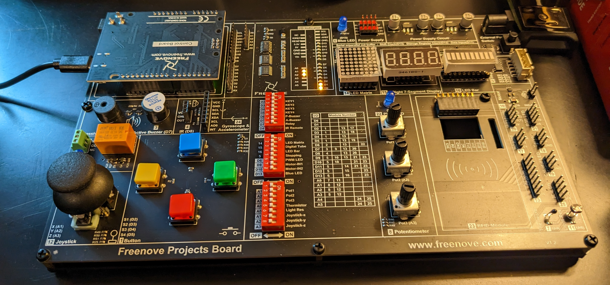

Introduction
Smart devices have become increasingly common in US households. Connected device commerce is expected to expand to a $581.85
billion industry by 2032, according to a recent report by precedenceresearch.com. Network connected devices are currently found in cars,
homes, tablets, watches, cell phones, surveillance systems, strap-on monitors, virtual reality equipment, and much more. The
increasing number of network-connected devices in the last decade has driven researchers to adopt the term “internet of things”,
also known as “IOT”. This project will explore the fundamental characteristics of IOT devices by developing a Bluetooth and Wi-Fi
connected greenhouse monitoring station using Arduino single-board computer parts, extended C/C++, Python, HTML, CSS, and JavaScript.
The first half of this project will involve completing a tutorial about Arduino hardware and the integrated development environment
(IDE), which I will complete with the help of Freenove® project board kit that came with the tutorial.

Figure 1.) The project board I will be using to learn about driver development, prototyping, and the Arduino IDE software in weeks
2-5 of the semester.
Vision Statement
The goal of this project is to develop a wide-area network transceiver with Arduino compatible sensors and single-board computing
parts. This project should provide a clear learning model and provide active exposure to the following career-related concepts...
- Object-Oriented Programming in C/C++
- Building a REST API Web Application using Python, HTML/CSS, XML, and JavaScript
- Contributing to a remote repository from a local development environment
- Database Design
- Network Drivers and Wireless I/O devices
- Real-Time Data Collection and Data Ingestion
- Computer Systems Engineering (CSE) fundamentals
Motivation
An IT-relevant hobby is a great way to learn new skills, develop a work portfolio, test new ideas, and connect with like-minded
individuals. Modern IOT developers need a basic understanding of sensors, controls, drivers, compilers, UX/UI interfaces, databases,
and network design to be effective in their roles. Single board computer design is a fun and affordable hobby that offers significant
exposure to these practical IT concepts in the form of entertaining projects and tutorials. Arduino is a company that sells
motherboards, sensors, wires, touchscreens, software, and just about any electronic device or computer part that one could imagine.
The company offers a tremendous variety of kits, tutorials, modular electronics, and software designed for rapid prototyping of
computer-based electronics and robotics equipment. Arduino is popular with engineers and hobbyists alike, and the company has built a
solid reputation for providing high-quality modular components and exceptional tutorials.
Project Goals and Assessments
The project is broken down into weekly sub-goals. Weekly goals and assessment criteria are presented together here, in the list below. Each sub-task is expected to require approximately 4 hours, with loosely associated tasks, such as purchasing parts and configuring the repositories of my local computer counted separately.
Week 1: Initial research, project design, and material ordering.
- Set up GitHub Pages (per course instructions).
- Develop the initial project idea.
- Participate in a class discussion to refine project ideas.
- Locate research materials: articles, YouTube videos, product reviews, blogs, forums, etc.
- Order the physical project materials.
Week 2-5: Complete the Freenove Arduino Project Board Tutorial.
- Learn about hardware and the Arduino IDE by completing the project board tutorial series.
- Develop a repository of tutorial code and post the code on GitHub.
- Document the learning experience using photos, essays, project code, etc.
- Post weekly learning updates and code to Piazza and GitHub.
Week 6: Develop the Device Blueprint and Assembly Plan
- Create a device blueprint using https://www.circuito.io or an equivalent software.
- Integrate knowledge from research materials (YouTube videos, tutorials, papers, etc.) and develop a plan for assembling
the device. Order any missing parts (connectors, power supply, etc.)
- Develop a test plan for the code and hardware created in the following steps, following test-driven development principles.
Week 7: Assembling, calibrating, and testing the meter functions.
- Create a USB serial port connection to a local laptop.
- Connect the probes (e.g., pH and TDS), sensors (e.g., capacitive soil moisture), control board, and peripheral components.
- Order a power supply if needed.
- Collect streaming data using an SQL database (e.g., SQLite).
- Evaluate sensor data with statistical measurements (mean, median, mode, inner-quartile range (IQR), standard deviation, …)
Week 8: Streaming Data with Bluetooth.
- Install a Bluetooth module on the device.
- Develop the firmware codebase to create a Bluetooth connection.
- Download the Arduino IDE mobile phone application and connect to the device.
- Observe streaming sensor data on a cell phone and document the result.
- Perform regression testing on the rest of firmware codebase to make sure that older features still work.
- Investigate the Arduino unit testing frameworks and begin developing a suite of regression tests.
Week 9: Streaming Data with Wi-Fi.
- Install a Wi-Fi transceiver on the existing device.
- Develop the firmware code to establish a Wi-Fi connection using a local area router and monitor the resource from a local
computer.
- Evaluate the device operation under the new firmware. Has the new configuration affected the performance of the device in any
way? Was the Wi-Fi connection a success? Why or why not?
Week 10: Exporting Data in SQL, XML, and JSON
- Explore data storage and back-up techniques, including SQLite, XML, and JSON storage formats. What section of the device
interface appears to work best for extracting the data in real time? What equations should be used to extract the data into a
more meaningful form? (e.g., “timed arithmetic average for pH sensor data.”)
- Create a folder that will eventually contain a Python script for serving dynamic HTML, CSS, and JavaScript (i.e., a REST API).
- Place the SQLite, XML, or JSON file(s) inside of the API folder. Program the firmware to overwrite a dependency file whenever
the device collects a new measurement. Which data format (SQL, XML, or JSON) seems easiest to incorporate with the proposed
API? Which data format appears least compatible with the proposed API? Explain.
- Regression testing.
Week 11: Developing a Simple Web Page to Display Sensor Data.
- Write a python script to serve dynamic single page web service using HTML/CSS/JavaScript combined with formatted data
developed from week 10.
- Render the API on a python simple server. Record a quick video and share the results on Piazza.
- Ensure the script renders the page correctly and all back-up files and dependencies are maintained by the transmitting
device.
Week 12: Documentation, Wrap-Up, and Presentation.
- Review the project materials, compose final documents and/or videos, and apply final touches to the project documentation.
- Complete the final presentation explaining how each section of the project went and share it with GitHub Pages and the rest
of the class.
Risks to Completing the Project
This will be my first Arduino project, so I expect to encounter some technical difficulties along the way. Here are some of the
risks to completing the project on time:
- Broken or missing parts: Forgetting to purchase a power supply or special component, or needing to replace a
broken piece at the wrong time could delay the project timeline by a week or so.
- Running out of memory: The final device is intended to function as a standalone computer with local and wide
area network connectivity. Single board computers contain less memory than a typical computer, however. Running out of
on-board memory would require restructuring the code base and rolling development features, either of these outcomes would
jeopardize the project timeline and outcome.
- Choosing the right development tools for the job: It is difficult to know ahead of time every tool that will
work best for this project.
- Forgetting a project section: It is possible that I may have overlooked some critical detail in the project
outline. There is also a chance that the project could be significantly more complicated than it is presented to be. Both
risks need to be addressed in the project timeline.
- Completing the project in the wrong order: Performing the development steps in the wrong order could lead to
complex bugs involving electrical components. For example, a project task could involve parts or firmware that are incompatible
with another section of the project. Troubleshooting a problem such as this could be time-consuming.
Mitigation Strategies
- Broken or Missing Parts: I have done my best to include only parts mentioned by the tutorials that I encountered
when designing this project. After ordering the first round of parts, I estimate that the lead time is somewhere between 5 and 7
days. I plan to prevent this sort of delay by organizing a dry run each week and checking the inventory for the next round. This
way I can identify any missing or broken parts before it really becomes an issue.
- Running out of memory: Memory limitations are a real concern in firmware development since there is often limited
on-board memory available for storing instructions. To combat this, I will need to use memory efficiently by applying algorithms
and deleting memory objects to prevent memory leaks. The good news is that Arduino single board computers should contain enough
memory to support most common driver functions. I expect the bigger task will be skimming the data from whatever port the device
is communicating on.
- Choosing the right development tools: I have done my best to outline the tools and resources I plan to use in each
stage of the project outline. That said, it is likely that unexpected problems will develop at some point in the project.
The important thing is to stay flexible and recognize when a solution is not working as it was once expected. If a tool does not
appear to be working, it may be time for a substitution. It is important to remain flexible and consider alternative tools and methods
that can assist in moving the project forward.
- Completing project items in the wrong order: I have afforded myself a 4-week learning period that I can use to
reassess the project design and make changes as I identify them. I believe this should provide plenty of time to identify
out-of-order project goals. Each step requires a minimum number of new parts and I plan on keeping the number of sensors to a minimum
over the course of this project. Each week provides an opportunity to reflect and change course if necessar